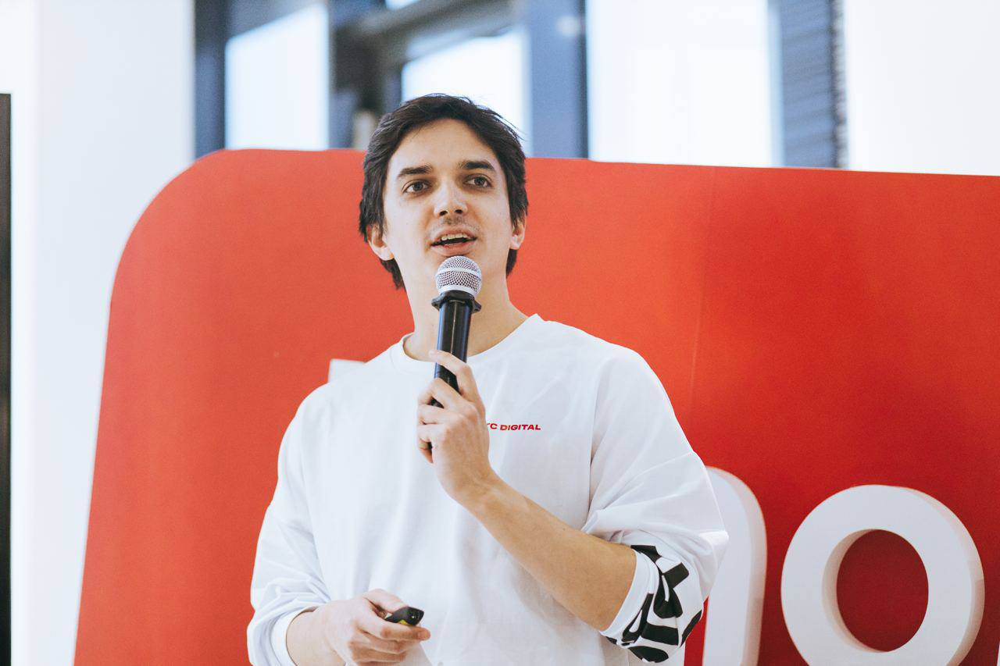

Deep Learning
for Search
Обзор курса и инструктаж перед миссией — вместе с Серёгой, твоим проводником по экспедиции.Course overview & mission briefing — with Serega, your expedition guide.

Добро пожаловать на борт. Миссия: поиск — перелёт через Галактику Информации.Welcome aboard. Mission: search — a flight through the Galaxy of Information.
Инструктаж перед миссией — планMission briefing — agenda
ПовесткаAgendaWho I am
Краткое знакомство с твоим преподавателем в этой экспедиции.A quick introduction to your instructor for this expedition.

Твой преподавательYour instructor
БиографияBio- · Education: MSc in Robotics & Computer Vision, Innopolis University (2021)
- · Now: PhD student — Deep Learning & Brain–Computer Interfaces
- · Industry: Lead Developer, MWS RnD · earlier — Machine Learning for Banking
- · Teaching: Probability & Statistics, Digital Signal Processing, Machine Learning, Deep Learning — Innopolis University, SPbU, HSE


Знакомься — Серёга, твой рисованный проводник. Он будет появляться весь семестр, чтобы делать сложные места дружелюбными.Meet Serega — your doodle guide. He'll pop up all term to make the hard parts friendly.
What is
this course?
Территория, которую мы пересечём, и почему это важно.The terrain we will cross, and why it matters.
Поиск повсюду.
Этот курс идёт от совпадения ключевых слов
к нейропоиску, векторным базам данных и RAG.Search is everywhere.
This course travels from keyword matching
to neural retrieval, vector databases, and RAG.

Ставки: слишком много данных, слишком мало времениThe stakes: too much data, too little time
Зачем вообще глубокое обучение для поискаWhy deep learning for search at all- · \(\sim 10^{12}\) страницpages — веб — порядка триллиона документов.the web is on the order of a trillion documents.
- · ~15% запросов в день совершенно новые — доля, которую Google приводит давно.of daily queries are brand-new — a share Google has long quoted.
Нельзя ни предвычислить всё (новые запросы ещё не существуют), ни прочитать всё в момент запроса (часы против четверти секунды).You can neither pre-compute everything (new queries don't exist yet) nor read everything per query (hours versus a quarter-second).
- × План A — ответить заранееPlan A — answer in advance гибнет на тех ~15%, которых никто ещё не видел.dies on the ~15% you've never seen.
- × План B — сканировать всёPlan B — scan everything гибнет по часам: даже по 1 мкс на документ \(10^{12}\) документов — больше недели вычислений, далеко за ~250 мс ожидания.dies on the clock: even at 1 µs/doc, \(10^{12}\) docs is over a week of compute — far past the ~250 ms a user waits.
- ✓ Поэтому и существует область: всё, что мы строим, — торг между качеством ответа и тем, как быстро и дёшево его получить.That's why the field exists: everything we build trades answer quality against how fast and cheaply you get it.
Что ты сможешь делатьWhat you will be able to do
ЦелиObjectives- ✓ Собрать сквозной конвейер нейропоиска / RAG — от корпуса до ответа.Build an end-to-end neural search / RAG pipeline, from corpus to answer.
- ✓ Сравнивать классический IR с нейропоиском — и понимать, когда что выигрывает.Reason about classical IR versus neural retrieval, and when each wins.
- ✓ Оценивать поиск и ранжирование правильными метриками — nDCG, MAP, MRR, \(\text{Precision@}k\), \(\text{Recall@}k\).Evaluate retrieval and ranking with proper metrics — nDCG, MAP, MRR, \(\text{Precision@}k\), \(\text{Recall@}k\).
- ✓ Проектировать поисковую систему для продакшна: задержка, масштаб и петли обратной связи.Design a search system for production: latency, scale, and feedback loops.
- ✓ Читать ключевые статьи о современном поиске и реализовывать описанные в них методы.Read and implement key papers behind modern retrieval.
Галактика Информации — вся картаThe Galaxy of Information — the whole map
Get Data → Measure → Rank → GenerateGet Data → Measure → Rank → GenerateВся галактика, которую нам предстоит пересечь — четыре территории, один маршрут. Каждая система поиска и ответа делает ровно эти ходы.The whole galaxy we are about to cross — four territories, one route. Every search-and-answer system makes exactly these moves.
А вот и сама машинаAnd here is the machine
шаг (←/→): пулинг → индекс → воронкаstep (←/→): pooling → the index → the funnelТот слайд — маршрут. Этот — механизм. Пулинг — единственное место, где ось \(n\) умирает. Индекс — не вторая машина, а тот же кодировщик, прогнанный по \(N\) документам заранее. Дальше — только сужение, и каждая стрелка стоит денег.That slide was the route. This one is the machine. Pooling is the one place where the axis \(n\) dies. The index is not a second machine — it is that same encoder, run over \(N\) documents ahead of time. After it, only narrowing — and every arrow costs money.
Schedule
& key dates
Четырнадцать недель: лекции, лабы, два экзамена и защита проекта.Fourteen weeks: lectures, labs, two exams, and a project defense.
Расписание — недели 1–5Schedule — Weeks 1–5
оба занятия в один день · по вторникамboth sessions the same day · Tuesdays| НеделяWeek | ТипKind | Темы и вехиTopics & milestones |
|---|---|---|
| W1 · 8 сенW1 · Sep 8 | лекцияlecture | L0 Введение в курс + L1 Поиск и информационный поиск · Дизайн ML-системL0 Course Introduction + L1 Search & Information Retrieval · ML System Design |
| лекцияlecture | L2 NLP · Токенизация · Меры близостиL2 NLP · Tokenization · Measures of Similarity | |
| W2 · 15 сенW2 · Sep 15 | лекцияlecture | L3 Классический IR (TF-IDF, BM25, инвертированный индекс) · Полнотекстовое ранжирование и Rank FusionL3 Classical IR (TF-IDF, BM25, inverted index) · Full-text Ranking & Rank Fusion |
| лекцияlecture | L4 Энтропия Шеннона — энтропия языкаL4 Shannon Entropy — the entropy of language | |
| W3 · 22 сенW3 · Sep 22 | лекцияlecture | L5 Метрики ранжирования (Recall@k, Precision@k, MRR, MAP, nDCG)L5 Ranking Metrics (Recall@k, Precision@k, MRR, MAP, nDCG) |
| мастерскаяworkshop | Мастерская · lab-bm25Workshop · lab-bm25 | |
| W4 · 29 сенW4 · Sep 29 | мастерскаяworkshop | Мастерская · hw-ranking-metricsWorkshop · hw-ranking-metrics |
| лекцияlecture | L6 Введение в DL для поиска · Векторные представления слов · Снижение размерностиL6 Intro to DL for Search · Word Embeddings · Dimensionality Reduction | |
| W5 · 6 октW5 · Oct 6 | лекцияlecture | L7 Плотные и контекстные эмбеддинги · Контрастное обучение · Трансформеры и вниманиеL7 Dense & Contextual Embeddings · Contrastive Learning · Transformers & Attention |
| лекцияlecture | L8 BERT и другие трансформеры — от attention до RLHFL8 BERT & other Transformers — from attention to RLHF |
Расписание — недели 6–10Schedule — Weeks 6–10
оба занятия в один день · по вторникамboth sessions the same day · Tuesdays| НеделяWeek | ТипKind | Темы и вехиTopics & milestones |
|---|---|---|
| W6 · 13 октW6 · Oct 13 | лекцияlecture | L9 Монтажная схема — контурные диаграммы: оси и счётL9 The Wiring Diagram — neural circuit diagrams: the axes, and the bill |
| лекцияlecture | L10 Би-энкодеры (DPR, SBERT) · Кросс-энкодеры и реранжирование · Многоступенчатые пайплайныL10 Bi-encoders (DPR, SBERT) · Cross-encoders & Reranking · Multi-stage Pipelines | |
| W7 · 20 октW7 · Oct 20 | мастерскаяworkshop | Мастерская · lab-cascadeWorkshop · lab-cascade |
| контрольcheckpoint | МидтермMidterm | |
| W8 · 27 октW8 · Oct 27 | лекцияlecture | L11 Горнило негативов — майнинг трудных негативов в контрастном плотном поискеL11 The Crucible of Negatives — hard negative mining in contrastive dense retrieval |
| лекцияlecture | L12 Позднее взаимодействие (ColBERT) · SPLADE · Гибрид · Learning to RankL12 Late Interaction (ColBERT) · SPLADE · Hybrid · Learning to Rank | |
| W9 · 3 нояW9 · Nov 3 | мастерскаяworkshop | Мастерская · hw-allianceWorkshop · hw-alliance |
| лекцияlecture | L13 ANN: HNSW, IVF, PQ · FAISS · Векторные БД · ПродакшнL13 ANN: HNSW, IVF, PQ · FAISS · Vector DBs · Production | |
| W10 · 10 нояW10 · Nov 10 | мастерскаяworkshop | Мастерская · lab-annWorkshop · lab-ann |
| лекцияlecture | L14 Кривая карта — геометрия смысла: анизотропия и хабностьL14 The Curved Map — geometry of meaning: anisotropy & hubness |
Расписание — недели 11–14Schedule — Weeks 11–14
оба занятия в один день · по вторникамboth sessions the same day · Tuesdays| НеделяWeek | ТипKind | Темы и вехиTopics & milestones |
|---|---|---|
| W11 · 17 нояW11 · Nov 17 | лекцияlecture | L15 Основы RAG · Чанкование · Понимание и переписывание запросаL15 RAG Fundamentals · Chunking · Query Understanding & Rewriting |
| лекцияlecture | L16 Оценка RAG (RAGAS, LLM-как-судья) · Агентный RAG (ReAct, Self-RAG, CRAG)L16 RAG Evaluation (RAGAS, LLM-as-judge) · Agentic RAG (ReAct, Self-RAG, CRAG) | |
| W12 · 24 нояW12 · Nov 24 | мастерскаяworkshop | Мастерская · hw-ragWorkshop · hw-rag |
| лекцияlecture | L17 Перо Артефактора — продвинутое переписывание и декомпозиция запросовL17 The Artificer's Quill — advanced query rewriting & decomposition | |
| W13 · 1 декW13 · Dec 1 | лекцияlecture | L18 Late Chunking — контекстные эмбеддинги чанков для длинных документовL18 Late Chunking — contextual chunk embeddings for long documents |
| лекцияlecture | L19 Поиск на русском — морфология наносит ответный ударL19 Search in Russian — morphology strikes back | |
| W14 · 8 декW14 · Dec 8 | лекцияlecture | L20 Продвинутый RAG (multi-hop, GraphRAG) · Мультимодальность (CLIP, ColPali) · Этика и безопасностьL20 Advanced RAG (multi-hop, GraphRAG) · Multimodal (CLIP, ColPali) · Ethics & Safety |
| мастерскаяworkshop | Мастерская · project-searchWorkshop · project-search |
Задания и лабы — дедлайныAssignments & labs — deadlines
Все дедлайны в 23:59All due 23:59| ПунктItem | ВыдачаReleased | ДедлайнDue | ТемаTopic |
|---|---|---|---|
| Лаба 1Lab 1 | 22 сенSep 22 | пн 28 сен, 23:59Mon Sep 28, 23:59 | (старт на занятии)(in-class start) |
| Задание 1Assignment 1 | 29 сенSep 29 | пн 5 окт, 23:59Mon Oct 5, 23:59 | Классический IR и метрики ранжирования: реализовать BM25 на корпусе; посчитать nDCG / MAP / MRR; разобрать решения по токенизацииClassical IR & Ranking Metrics: implement BM25 on a corpus; compute nDCG / MAP / MRR; analyze tokenization choices |
| Лаба 2Lab 2 | 20 октOct 20 | пн 26 окт, 23:59Mon Oct 26, 23:59 | (старт на занятии)(in-class start) |
| Задание 2Assignment 2 | 3 нояNov 3 | пн 9 ноя, 23:59Mon Nov 9, 23:59 | Двухстадийный поиск и обучение ранжированию: би-энкодер → кросс-энкодер; добыча трудных негативов; попарное против списочногоTwo-Stage Retrieval & Learning-to-Rank: bi-encoder → cross-encoder; hard-negative mining; pairwise vs listwise |
| Лаба 3Lab 3 | 10 нояNov 10 | пн 16 ноя, 23:59Mon Nov 16, 23:59 | (старт на занятии)(in-class start) |
| Задание 3Assignment 3 | 24 нояNov 24 | пн 30 ноя, 23:59Mon Nov 30, 23:59 | Проектирование системы RAG: конвейер RAG + стратегии чанкования; оценка в стиле RAGAS; агентный циклRAG System Design: RAG pipeline + chunking strategies; RAGAS-style eval; agentic loop |
| ПроектProject | 20 октOct 20 | вт 22 декTue Dec 22 | Свой поисковый сервис end-to-end: ядро руками, нейронная ступень, честная оценка с абляциями — сдаётся на защитеYour own end-to-end search service: hand-built core, a neural stage, an honest evaluation with ablations — delivered at the defense |
Grading
& policy
Оценивание миссии и правила игры.How the mission is scored, and the rules of engagement.
Оцениваемые активности и веса — текущиеGraded activities & weights — continuous
Задания + лабы = 30%Assignments + labs = 30%| АктивностьActivity | ВесWeight |
|---|---|
| Задание 1Assignment 1 | 5% |
| Задание 2Assignment 2 | 5% |
| Задание 3Assignment 3 | 5% |
| Лаба 1Lab 1 | 5% |
| Лаба 2Lab 2 | 5% |
| Лаба 3Lab 3 | 5% |
| Текущие всегоContinuous total | 30% |
Оцениваемые активности и веса — итоговыеGraded activities & weights — summative
Экзамены + защита = 70% · сумма = 100%Exams + defense = 70% · sum = 100%| АктивностьActivity | ВесWeight |
|---|---|
| Промежуточный экзаменMidterm Exam | 20% |
| Финальный экзаменFinal Exam | 30% |
| Защита проектаProject Defense | 20% |
| Итоговые всегоSummative total | 70% |
Шкала оценокGrade scale
Итоговый балл → букваFinal score → letter| ОценкаGrade | Диапазон балловScore range |
|---|---|
| A | \([90, 100]\) |
| B | \([70, 90)\) |
| C | \([50, 70)\) |
| D | \([0, 50)\) |
Списывание: нулевая терпимость. Поздние сдачи не принимаются.Cheating: zero-tolerance. No late submissions.
How to
succeed
Чего ожидать, что нужно и как выжать максимум из лекций.What to expect, what you need, and how to get the most out of lectures.
Как преуспетьHow to succeed
Ожидания · пререквизитыExpectations · prerequisitesЧего ожидатьWhat to expect
- · Интерактивные HTML-слайды, к которым можно вернуться в любой момент.Interactive HTML slides you can revisit anytime.
- · Лёгкий фантастический сюжет — с проводником Серёгой, нашим рисованным маскотом, — вплетённый в каждую тему.A light sci-fi narrative — guided by Serega, our doodle mascot — threaded through each topic.
- · 3 лабы + 3 задания + промежуточный / финальный экзамены + защита проекта.3 labs + 3 assignments + midterm / final + a project defense.
Читай статью по ссылке до занятия · запускай код лабы сам · спрашивай в моменте, а не после.Read the linked paper before class · run the lab code yourself · ask in the moment, not after.
Пререквизиты и инструментыPrerequisites & tools
- · Python — уверенно читаешь и пишешь на нём.Python — comfortable reading and writing it.
- · Базовые ML, линейная алгебра и теория вероятностей.Basic ML, linear algebra, and probability.
- · Инструменты: PyTorch, HuggingFace, FAISS, концепции Elasticsearch / Solr.Tools: PyTorch, HuggingFace, FAISS, Elasticsearch / Solr concepts.
Предыдущий опыт в поиске не нужен — для этого и есть первые две недели.You do not need prior search experience — that is what the first two weeks are for.
Учебники и источникиTextbooks & sources
Что читать дальшеRead next- Teofili, T. · Deep Learning for Search · Manning 2019
- Turnbull, D. & Berryman, J. · Relevant Search: With applications for Solr and Elasticsearch · Manning 2016
- Babushkin, V. & Kravchenko, A. · Machine Learning System Design: With end-to-end examples · Manning 2025
- Lin, J., Nogueira, R. & Yates, A. · Pretrained Transformers for Text Ranking: BERT and Beyond 2021
- Selected course papers · DPR, SBERT, ColBERT, SPLADE, LambdaMART, HNSW, RAG, Self-RAG, CRAG, RAGAS —
Let's begin.
Слайды, лабы, задания и записи — по QR-коду или ссылке ниже.Slides, labs, assignments and recordings — via the QR code or the link below.

Я сделаю вашу жизнь невыносимой.I will make your life miserable.